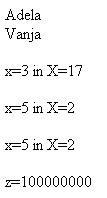

Neraziskano življenje ni vredno življenja. (Sokrat)
 Slika 1 in 2: Spremenljivke - koda in videz spletne strani 1. Izdelaj spletno stran, ki bo izgledala tako, kot kažeta sliki 1 in 2. Datoteko poimenuj "09apriimek.html". Ne pozabi na konènico ".html". POZOR: Najprej NATANÈNO izdelaj vajo v tej uèni enoti in jo pokaži profesorju, nato zapiši odgovore na spodnja vprašanja. 2. V kodo primera v tej uèni enoti vstavi spodaj navedene komentarje na ustrezna mesta, ki jih ti komentarji pojasnjujejo. //Znaèka, ki oznaèuje zaèetek HTML dokumenta. //Izpišemo deklarirano spremenljivko. //Deklarirani spremenljivki priredimo vrednost "Vanja". //Znaèka, ki oznaèuje zaèetek skripta v HTML dokumentu. //V spletno stran vstavimo prelom vrstice. 3. Kodo primera v tej uèni enoti spremeni tako, da bo vsebovala deklaracijo še ene spremenljivke "priimek". Spremenljivki "priimek" nato priredi vrednost, ki je enaka kar tvojemu priimku. 1. Vprašanja za usmerjanje pozornosti in usvajanje novih besed: 1. Kaj so spremenljivke? 2. Zakaj se spremenljivke tako imenujejo? 3. Zakaj sta v JavaScriptu spremenljivki "ime" in "Ime" dve razlièni spremenljivki? 4. Kaj je deklariranje spremenljivk? 5. S katerim ukazom deklariramo spremenljivke v JavaScriptu? 6. Kako priredimo vrednosti spremenljivkam v JavaScriptu? 7. Kaj je samodejno deklariranje nove spremenljivke? 2. Zapiši od ene do pet kljuènih besed, ki povzemajo vsebino te uène enote. 3. Vprašanja za razmislek in povezovanje z lastno izkušnjo: 1. Kakšna je razlika med spremenljivko a in številom 5? 2. Zapiši tiste spremenljivke v primeru te uène enote, ki imajo kratko ime. 3. Zapiši tiste spremenljivke v primeru te uène enote, ki imajo opisno ime. 4. Zapiši tiste spremenljivke v primeru te uène enote, ki smo jih deklarirali dvakrat. 5. Zapiši tiste spremenljivke v primeru te uène enote, ki smo jim priredili vrednost, ne da bi jih deklarirali. 6. Katero vrsto komentarja v JavaScriptu smo uporabili v primeru na sliki 1? 4. Domaèa naloga: 1. V zvezek prepiši misel, ki je zapisana na zaèetku uène enote z rdeèimi èrkami. Zabeleži nekaj lastnih misli, ki se ti utrnejo ob razmišljanju o njej. 2. Odgovori na vprašanja, na katere nisi uspel/a odgovoriti v šoli. 5. DODATNO DELO: |